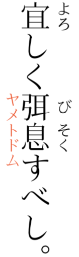

このページは、先日の「HTML + CSS だとブラウザ依存性がつらいので XeLaTeX で縦書きしてみた (が、まだ要改善)」という記事 (.sty ファイルは リポジトリに置いてあります) の続きです。
先日書いた方法では、XeLaTeX で花園明朝を使って縦書きするところまではなんとかできたけれども、禁則処理がどうもうまくはたらいていないのでした。 試行錯誤した末、禁則処理もうまくいったので、備忘録を残しておきます。
だらだら書いていますが、 結果だけ御覧になるのでも、なんとなく意図はつかめるかと思います。
約物と小書きの仮名が縦書き用グリフになってくれない花園明朝を使うために、仮名混植を真似てごにょごにょする代わりに、この問題に特化した (ように見える) 専用のオプション (xeCJK パッケージのもの) を使うことにし、それに必要な設定をしました。 それにともない、結果として、小書きの仮名の禁則処理も改善されました。
しかし、約物の禁則処理がうまくいかなかったり、脚注番号の直前で改行されたりという問題が残っていました。 そこで、xeCJK パッケージのグルー関連のオプション等をうまく設定することで禁則処理ができるようになるのではないかと思って試行錯誤していたのですが、ほとんど迷走していただけでした (多少は禁則処理がましになる、という程度)。 また、行末に空白を許せば禁則処理がうまくいくかと思って ragged2e パッケージも試してみましたが、これもうまくいきませんでした。
あれこれ試した挙句に気づいたのが、pxrubrica パッケージの設定で和文ゴースト処理を有効にすることで禁則処理がうまくいく、ということでした。 これが最後の決め手になった (これなしでは、いくらグルーの調整をしてもうまくいかなかった) 理由は、多分、総ルビだから (かつ、脚注番号があちこちについているから) ではないかな、とぼんやり推測しています (が、違うかもしれません)。
以下では、迷走部分は飛ばして、結果的に採用した設定について詳細を書いてゆきますが、この中で xeCJK パッケージのマニュアルを引用した箇所があります。 xeCJK パッケージのマニュアルは、中国語のものしかないので、2018/04/30 付の v3.7.1 からの抜粋に拙訳 (斜体部分) を添える形で引用しました。
とは言っても、わたしはあまり中国語が読めるわけではなくて、中国語のままだと読み返すのがしんどいので自分用のメモとして日本語がほしいな、くらいの気持ちで作った訳文なので、信用しすぎては駄目です。 むしろ、間違いの御指摘などをいただければ幸いです。
まず、約物と小書き文字に関する方針変更について書きます。 一見、禁則処理とは関わりのなさそうなところから話を始めますが、かな混植を真似た方式をやめて別の方式にしたら、実は禁則処理の点でも良かった、というところが味噌です。
前回の記事に書いたとおり、小書き文字や約物だけ別フォントを使うために、かな混植を真似た方式を使っていたのですが、それをやめました。 まさにこの目的に特化したオプションが「3.1 宏包选项 (パッケージオプション)」節にあることに気づいたからです。
PunctFamily = {⟨false|family⟩}
默认情况下，CJK标点符号的字体与CJK正文一致，PunctFamily用于单独对标点符号设置字体。⟨family⟩需要使用随后说明的\setCJKfamilyfont或\newCJKfontfamily预先定义。false表示取消本选项的作用，让标点符号字体与正文一致。
デフォルト状態では、CJK の約物の字体は、CJK の本文 (の字体) と一致しています。PunctFamily は、約物に対して独立に字体を設定するのに用います。
⟨family⟩ は、後述の \setCJKfamilyfont または \newCJKfontfamily を用いて、予め定義しておく必要があります。
false は、このオプションの作用を打ち消して、約物の字体を本文 (の字体) と一致させることを示します。
これはもしや「花園明朝フォントでは小書き文字と約物が縦書き用のグリフにならない」という問題を解決するための専用コマンドなのでは、と疑いたくなるくらいドンピシャです。 かな混植を真似た方法 (前回の記事を参照) よりも、こちらを使った方が良さそうです。
では、このオプションはどのコマンドで設定するのかというと、\xeCJKsetup コマンドで設定します。
\xeCJKsetup {⟨key1⟩=⟨val1⟩,⟨key2⟩=⟨val2⟩, ...}
其中⟨key1⟩,⟨key2⟩是设置选项，而⟨val1⟩,⟨val2⟩则是对应选项的设置内容。多个选项可以在一个语句中完成设置。
ここで、⟨key1⟩, ⟨key2⟩ は設定オプションで、⟨val1⟩, ⟨val2⟩ は対応するオプションの設定内容です。 複数のオプションを一つの文で設定し終えることができます。
\usepackage{xeCJK} と宣言するときにパッケージオプションを指定してもよいし、そうする代わりに後から \xeCJKsetup でオプションを設定することもできる仕組みになっています。
ただ、PunctFamily オプションに関しては、上記のとおり「⟨family⟩ は、後述の \setCJKfamilyfont または \newCJKfontfamily を用いて、予め定義しておく必要」があるので、後から \xeCJKsetup で設定するしかありません。
ではその \newCJKfontfamily とは何か、というと、「3.2 字体设置与选择 (フォントの設定およびオプション)」節に次のようにあります。
\newCJKfontfamily [⟨family⟩] \⟨font-switch⟩{⟨font name⟩}[⟨font features⟩] 或
\newCJKfontfamily [⟨family⟩] \⟨font-switch⟩[⟨font features⟩] {⟨font name⟩}
声明新的CJK字体族⟨family⟩并指定字体，并定义\⟨font-switch⟩，在文档中可以使用它来切换CJK字体族。可以不必指定⟨family⟩，这时候⟨family⟩将等于⟨font-switch⟩。
新たな CJK フォントファミリ ⟨family⟩ を宣言するとともに、フォントを指定し、かつ、\⟨font-switch⟩ を定義して、ファイル内でそれを使って CJK フォントファミリを切り換えられるようにします。 必ずしも ⟨family⟩ を指定しなくてもよく、この場合は、⟨family⟩ は ⟨font-switch⟩ と等しくなります。
つまり、ここでの ⟨family⟩ と \⟨font-switch⟩ は自分が好きにつける名前であり、⟨font name⟩ はその新たな名前で指す既存フォントの名前 (たとえば YuMin-Medium) であり、⟨font features⟩ は、たとえば Vertical=RotatedGlyphs,RawFeature={vertical:-vhal} といった特性、というわけです。
このオプションによって、游明朝体 (またはその他の適当なフォント) に上記のような縦書き用の特性を適宜設定し、それに対して適当な名前をつければ (そしてその名前を上述の PunctFamily オプションの値として指定すれば)、約物に対して、本文で使う花園明朝フォントとは別のフォントを使えるようになります。
具体的には、たとえば以下のように書くことで、(本文では花園明朝を使いつつも) 約物 (花園明朝では縦書き用のグリフにならない文字) では游明朝体を使うことが可能となります (yakumonofont と yakumono は適当につけた名前です)。
\newCJKfontfamily [yakumonofont] \yakumono{YuMin-Medium}[Vertical=RotatedGlyphs,RawFeature={vertical:-vhal}]
\xeCJKsetup{
PunctFamily = yakumonofont
}
ところで、前回も書いたとおり、花園明朝を使って縦書きすると、約物だけでなく小書きの仮名も問題になるのでした。 この問題を解決するために、小書きの仮名を、閉じ括弧の類 (つまり行頭にくることが禁止される) 約物の一種であるかのように定義しました。 これにより、縦書き用のグリフが使えるフォントを (約物と同様に) 小書きの仮名にも適用でき、かつ、小書きの仮名が行頭にくることも禁止できます。 なんだか御都合主義っぽく見えますが、そういうコマンドがあったので、利用しない手はありません。
具体的には、「3.4 设置CJK字符范围 (CJK 文字範囲を設定する)」節に以下のようにあります。
\xeCJKDeclareCharClass {⟨class⟩} {⟨class range⟩}
\xeCJKDeclareCharClass* {⟨class⟩} {⟨class range⟩}
⟨class range⟩的格式和3.3节的⟨block range⟩相同。⟨class⟩的有效值见源代码（第5.4节）。xeCJK已经支持Unicode中所有CJK文字和标点。一般来说，不要轻易改变字符类别。带星号的命令除了设置字符类别以外，为了确保标点处理的正确性，还重置标点符号所属的字符类。
⟨class range⟩ の形式は 3.3 節の ⟨block range⟩ と同じです。 ⟨class⟩ の有効な値は、ソースコードの中に見えます (5.4節)。 xeCJK はすでに Unicode におけるすべての CJK 文字と約物をサポートしています。 一般には、文字種別を軽率に変更してはいけません。 アスタリスク付きのコマンドは、文字種別を設定するだけでなく、約物の処理 (禁則処理) の正確性を確保するために、約物の属する文字種別も置換します (訳注: 一応訳してみたが、最後の文はよく分からない)。
ここで参照されている ⟨class⟩ の有効な値を「5.4 字符类别设定 (文字種別の設定)」節から抜粋すると、次のとおりです。
xeCJK需要以下字符类别用于字符输出。其中Default、CJK、FullLeft、FullRight、Boundary为XƎTEX中预定义的类别，xeCJK新增加了HalfLeft、HalfRight、NormalSpace和CM。其中异体字选择符(Ideographic Variation Selectors)7需要XƎTEX0.9999.0以上的版本8和相关字体的支持。
类别 说明 例子 Default 西文一般符号 abc123 CJK CJK表意符号 汉字ぁぃぅ FullLeft 全角左标点 （《：“ FullRight 全角右标点 ，。）》” HalfLeft 半角左标点 ( [ { HalfRight 半角右标点 , . ? ) ] } NormalSpace 前后原始间距的符号 / Boundary 边界 空格 CM 组合标识 异体字选择符 HangulJamo 朝鲜文字母 ᄻᆟᇫ
xeCJK は、文字出力において、以下の文字種別を必要とします。 これらのうち、Default、CJK、FullLeft、FullRight、Boundary は、XeTeX において予め定義された種別です。xeCJK は、HalfLeft、HalfRight、NormalSpace、CM を新たに追加しました。 これらのうち、異体字セレクタ (Ideographic Variation Selectors) は、XeTeX 0.9999.0 以上のバージョンと、関連するフォントのサポートとを、必要とします。
| 種類 | 説明 | 例 |
|---|---|---|
| Default | 欧文の一般的文字 | abc123 |
| CJK | CJK 表意文字 | 汉字ぁぃぅ |
| FullLeft | 全角の左側 (開く側) の約物 | （《：“ |
| FullRight | 全角の右側 (閉じる側) の約物 | ，。）》” |
| HalfLeft | 半角の左側 (開く側) の約物 | ( [ { |
| HalfRight | 半角の右側 (閉じる側) の約物 | , . ? ) ] } |
| NormalSpace | 前後が元々空く記号 | / |
| Boundary | 境界 | 空白 |
| CM | 組み合わせ標識 | 異体字セレクタ |
| HangulJamo | ハングル字母 | ᄻᆟᇫ |
FullLeft は 行末に来てはならない全角文字に相当し、FullRight は行頭に来てはならない全角文字に相当する、と考えれば良さそうです。 そのいずれでもない CJK に小書き仮名が入っているのが、禁則処理の面でまずそうなところです。 つまり、小書き仮名が行頭に来ないようにするためには、小書き仮名のクラスを FullRight に改めればよいわけです。 それにより、小書き仮名の禁則処理もうまくいき、かつ、小書き仮名には約物と同じく、上記の PunctFamily オプションで設定したフォントが使われるので、めでたく縦書き用のグリフとなります。一石二鳥です。
なお、実際には以下のとおり、小書き仮名のほかに、二の字点 (〻)・同の字点 (々)・波ダッシュ・長音符号・三点リーダも、行頭では禁止したいので FullRight の文字として指定してみましたが、もしかするとこれらの文字については指定不要なのかもしれません。 ちょっと試行錯誤に疲れたので、「まあ害にはならないようだし、いいか」と放置しています。 パッケージのソースコード (と中国語) が読める人がマニュアルの p. 27 前後を読めば、要否がパッと分かるのかもしれませんね。
\xeCJKDeclareCharClass{FullRight}{
`〻, `々, `〜, `ー, `…,
`ぁ, `ぃ, `ぅ, `ぇ, `ぉ, `っ, `ゃ, `ゅ, `ょ,
`ァ, `ィ, `ゥ, `ェ, `ォ, `ッ, `ャ, `ュ, `ョ
}
続いて、今回の例で禁則処理を成功させる決め手になった「和文ゴースト処理」について書きます。 これは pxrubrica パッケージで定義されている処理です。 マニュアルの 2.5 節によると、「和文ゴースト処理」とは、
和文ルビの親文字列出力の前後に全角空白文字を挿入する（ただしその空きを打ち消すように負の空きを同時に入れる）ことで、親文字列全体が、その外側から見たときに、全角空白文字（大抵のJFMではこれは漢字と同じ扱いになる）と同様に扱われるようにする。
というもので、これを有効にすることによるメリットとして、「行分割禁止（禁則処理）が常に正しく機能する」「特殊な状況（例えば段落末）でも異常動作を起こしにくい」などが挙げられています。 同時に、デメリットとして「ルビ出力の進入と共存できない」ことが挙げられています。
なおここでの「進入」とは「ルビ文字出力が親文字に隣接する文字の領域（水平方向に見た場合）に配置されること」です。 その逆は「突出」で、これは「ルビ文字出力の端が親文字よりも外側に出ること」です (マニュアルの 2.1 節で定義されている用語です)。
ところで、わたしが行いたいのは、縦書き・総ルビの本のデータ起こしです。 たとえば、いま試しに対象としているのは、『続国訳漢文大成 経子史部 第五巻 資治通鑑 第五巻』の「巻の第八十二」で、ごくたまにルビ注が使われていたりもします (左ページ 7 行目末)。
ルビサイズの親文字サイズに対する割合は、\rubysizeratio コマンドで変更できますが、規定値は 0.5 です。
この値を 0.5 未満に変更すれば (たとえば 0.2 などとすれば)、ルビ文字列が親文字より長くなるのを防げるでしょうが、字が小さすぎて見づらいでしょうから、ルビの大きさは変えたくありません。
一方、総ルビの場合、3 文字以上のルビが振られた親文字が連続することはちょくちょくあります。
もちろん、
「総ルビといえども仮名の箇所はあるわけだから、親文字の隣の仮名の横にルビを『進入』させればいいじゃないか」
という考えもあるでしょうが、わたしは
「都合よく仮名が配置される保証はないし、前の親字から『進入』してきたルビと後の親字から『進入』してきたルビが仮名のところで連続してしまったら読みの区切りが不明確になるだろうし、そもそもルビと親字の対応関係を見た目ではっきりさせるためにも、ルビは『突出』させた方がよい」
と考えました。
したがって、\rubysetup{|m|} のように、前進入無し・後進入無しを指定しました (前後の縦棒がこの指定に相当)。
ただ、当然ながら、総ルビかつ「突出」だと、隣り合う親字同士の間に微妙な大きさの空白がちょこちょこ入り、一行あたりの親字の数も決して一定ではなく、なんとなく禁則処理が難化しそうな雰囲気です。 また、実際に、xeCJK パッケージのグルー関連のオプションを調整して試行錯誤しても、なかなか禁則処理がうまくいきませんでした。 それで困っていたときに、ふと和文ゴースト処理のメリットが目に留まり、試してみたら禁則処理の問題が解決した、というわけです。
もう少し細かく和文ゴースト処理のメリット・デメリットを読み返してみます。 まず、「行分割禁止（禁則処理）が常に正しく機能する」という点は、文句なしにありがたいメリットです。 次に、「特殊な状況（例えば段落末）でも異常動作を起こしにくい」という点ですが、総ルビの場合は文章中のどこにでもルビが存在し得る、と考えるべきでしょうから、「特殊な状況」がそれなりの頻度で生じてもおかしくない、と思っておいた方が安全なわけで、その意味で、これもありがたいメリットです。 一方、上述のとおり、わたしは総ルビには「進入」はそぐわないと考えて「突出」を選んでいるので、「ルビ出力の進入と共存できない」というデメリットは基本的には無視できます。
ただし、「基本的には」と言ったのは例外があるためで、その例外についてだけは対処が必要でした。 具体的には、ルビ注を再現するために定義したコマンドを修正しました。 これについて、例を挙げて説明します (といっても、今回作業したデータの中にルビ注が一箇所しか出てこなかったので、その箇所にだけ特化して適応してしまっている可能性もなきにしもあらず)。
右図はルビ注をつけた箇所の組版結果のスクリーンショットです。 「弭息」なる熟語の「弭」の字の右に「び」というルビを振り、「息」の字の右に「そく」というルビを振ってあります。 同時に、「弭息」という文字列全体の左には、「す」の字の上半分まで「進入」する形で「ヤメトドム」というルビ注が書かれています。 なお、親字の右側のルビは「中付き」のモノルビ方式であるのに対し、親字の左側のルビ注は「肩付き」のグループルビ方式です。
ところで、pxrubrica パッケージには両側ルビのための \truby コマンドがありますが、どうも右側ルビと左側ルビに対して別々のオプションを指定できないようなのです。
しかし、右図に示したように、右側ルビと左側ルビ (ルビ注) に別々の書式を適用したいわけです。
仕方がないので、右側にルビを振った文字列を親字扱いにして、その全体に対して左側にルビを振ることでルビ注を再現することにして、\rubychu なる 2 引数のコマンドを定義しました。
たとえば「\rubychu{\ruby{弭息}{び|そく}}{ヤメトドム}すべし」のように使うことを想定しています。
最初の定義は以下のようなものでした。
ルビ注に対して、「前突出禁止 (||)・グループルビ (g)・左側配置 (S)・行分割禁止 (*)・後進入大 (>)」というオプションを指定しています。
ルビ注文字列が親字文字列より短ければ中付きで構わないけれども、ルビ注文字列の方が長い場合は肩付きにしたい、と思って、このように前突出禁止を指定してみました。
また、行分割禁止を指定すべきかは迷うところですが、とりあえずこうしてみました。
\newcommand{\rubychu}[2]{{%
\rubyintergap{0.2}%
\ruby[||gS*>]{{\rubyintergap{0}{#1}}}{{\textcolor[rgb]{1.0,0.25,0.0}{#2}}}%
}}
しかし、このオプション指定は、禁則処理の改善のために今回導入した和文ゴースト処理の「ルビ出力の進入と共存できない」という性質に抵触します。
そこで、ルビ注に関しては一旦 \rubynousejghost で和文ゴースト処理を無効にしつつ、右側にルビを振る (ことが想定される) 箇所 (すなわち {#1} のところ) の直前で \rubyusejghost により再び和文ゴースト処理を有効にするように修正しました。
最後に再び \rubyusejghost としているのは、このコマンドを抜けた後は和文ゴースト処理を有効にしておきたいからです。
\newcommand{\rubychu}[2]{{%
\rubynousejghost
\rubyintergap{0.2}%
\ruby[||gS*>]{{\rubyintergap{0}\rubyusejghost{#1}}}{{\textcolor[rgb]{1.0,0.25,0.0}{#2}}}%
\rubyusejghost
}}
以上のようにユーザ定義コマンドの修正は必要でしたが (また、場合によっては和文ゴースト処理を無効化したルビ注の箇所で運悪く禁則処理が失敗するような文書も存在し得るかもしれませんが)、とにかく和文ゴースト処理を取り入れれば総ルビでも禁則処理がうまく働くようです。
さて、ここからはおまけです。 試行錯誤中にぶら下げ指定をしてみて、特に害はなさそうなので (かつ、削っても問題がないのかを今更確認するのも面倒なので)、そのまま放置してあります。 そのぶら下げ指定について、以下に概要だけ書いておきます。
ぶら下げ指定は、xeCJK パッケージで設定できます。
enabled-hanging ⟨boolean⟩
当以上选项的计算结果得到的宽度小于标点符号的实际边界宽度时，是否允许标点符号悬挂出页面边界。默认值是false。
以上のオプションの計算の結果得られた幅が、約物の実際の境界の幅未満のとき、約物をぶら下げて版面の境界より外に出すことを許すかどうか。
デフォルト値は false です。
なおここで、「幅」と述べているのは、横書きを想定して説明しているからだと思われます。 ぶら下げを許可することで、組版の際の制約が弱まるのではないか (そして、その結果として、無理のある不自然な組み方を回避できるのではないか)、という期待があったので、禁則処理に四苦八苦しているときにこのオプションを設定してみました。
具体的には、このオプションは、「3.5.2 定义标点符号处理格式 (約物の処理方式を定義する)」節に出てくる \xeCJKDeclarePunctStyle コマンドで設定できる多数のオプションのうちの一つです。
\xeCJKDeclarePunctStyle {⟨style⟩} {⟨options⟩}
定义新的标点符号处理格式，已经存在的同名格式将被覆盖。可以设置的选项将在下面介绍。
約物の新しい処理方式を定義します。 既存の同名の方式は上書きされます。 設定できるオプションを以下に紹介します。
このコマンドを使えば、多数のオプションをまとめて設定し、その設定した方式に名前をつけられます。
そして、その名前は、上述の \xeCJKsetup コマンドの中で PunctStyle オプション (約物の処理方式を設定するオプション。詳しい説明はここでは省略) の値として使えます。
そこで、今回は以下のように指定してみました (yakumonosty は適当につけた名前)。
これがどこまで実際の組版結果に影響したのかはよく分かりませんが、とりあえず害はなさそうです。
\xeCJKDeclarePunctStyle{yakumonosty} {
enabled-hanging = true
}
\xeCJKsetup {
PunctStyle = yakumonosty
}